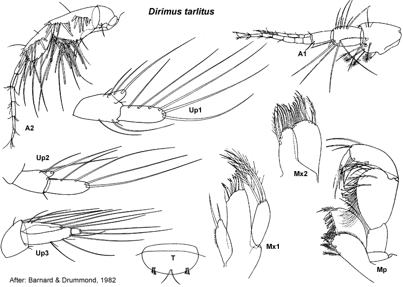

Dirimus Barnard & Drummond, 1982: 132
Type species. Dirimus tarlitus Barnard & Drummond, 1982, by monotypy
Description.Antenna 1 peduncular article 1 setal row with only slender setae, proximal pair of setae simple. Maxilla 1 palp with apical group of setae only.
Gnathopod 1 simple; coxa small, subequal in size to coxa 2. Gnathopod 2 minutely subchelate. Pereopod 3 coxa small, larger than coxa 4. Pereopod 4 coxa small. Pereopod 5 dactylus without robust setae. Pereopod 7 coxa without long posterior spine; basis fully expanded.
Uropod 1 inner ramus not fused to peduncle. Uropod 2 inner ramus not fused to peduncle. Telson entire.

___________________________
This publication should be cited as: Kilgallen, N.M. & Lowry, J.K.
2008. Urohaustoriidae (Amphipoda): World Genera and Species. Version 1.
1 January 2008. https://crustacea.net.